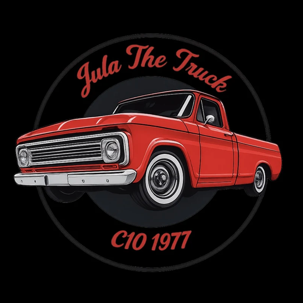

Uma caminhonete que virou legado
O Projeto Jula é a restauração de uma Chevrolet C10 1977, um tributo à Jula e ao vovô Antônio. Foram anos de chapa cortada e refeita, primer, lixa e peça medida duas vezes antes de comprar, até o vermelho voltar para a rua.
A história não coube só na garagem. Virou jogo para jogar no celular, doze músicas, uma moeda e um álbum de fotos. Tudo está aqui, nesta página.
Tire a C10 da ferrugem.
Uma C10 1977 parada na garagem, pouco dinheiro no bolso e o Seu Zito de olho em cada peça. A restauração é com você.
- 01Compre as peças
- 02Aperte cada parafuso
- 03Dê a partida
Roda direto no navegador do celular. Para instalar, abra no Safari (iPhone) ou no Chrome (Android) e adicione à tela de início.

Da ferrugem ao vermelho
Fotos tiradas no meio do trabalho, sem pose, com o celular na mão suja. Elas mostram o que quase nunca aparece no resultado final: chapa podre, madrugadas de lixa, dedo machucado e, no fim, a cor. Toque numa foto para ampliar.
Aumenta o som.
O Projeto Jula também virou música. São 12 faixas para ouvir na garagem, na estrada ou no encontro de antigos.
Ouvir no AudiusIn Jula we trust.
A Julacoin é a criptomoeda do Projeto Jula. Ela está no Moonshot, para quem quer levar a Jula também na carteira.
- Moeda
- Julacoin
- Símbolo
- JULA
- Onde
- Moonshot
Criptomoedas são voláteis e você pode perder o valor aplicado. Isto não é recomendação de investimento.
Não é só uma caminhonete. É o que a gente construiu junto.